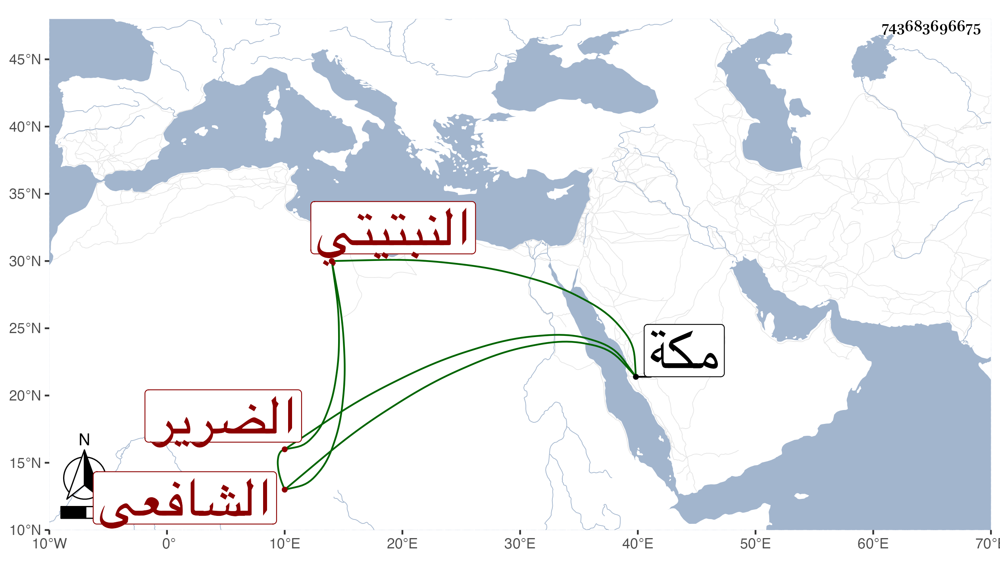

0902Sakhawi.DawLamic.ITO20230111-ara1.EIS1600.743683696675
Biography ID: 743683696675
897
علي بن عمر بن علي بن غنيم بن علي أبو الحسن بن الشيخ النبتيتي الشافعي الضرير الآتي أبوه وأخوه محمد . ولد سنة أربع وثلاثين وثمانمائة تقريبا وحفظ القرآن عند عبد الله النشوي الضرير وجوده أو بعضه على الشهاب بن أسد وسمع منه المسلسل بسورة الصف وإنا أعطيناك الكوثر وعلى علي الجبرتي والسنهوري وزكريا في آخرين وبمكة حين حج حجة الإسلام إلى أثناء سورة هود على علي الديروطي .
